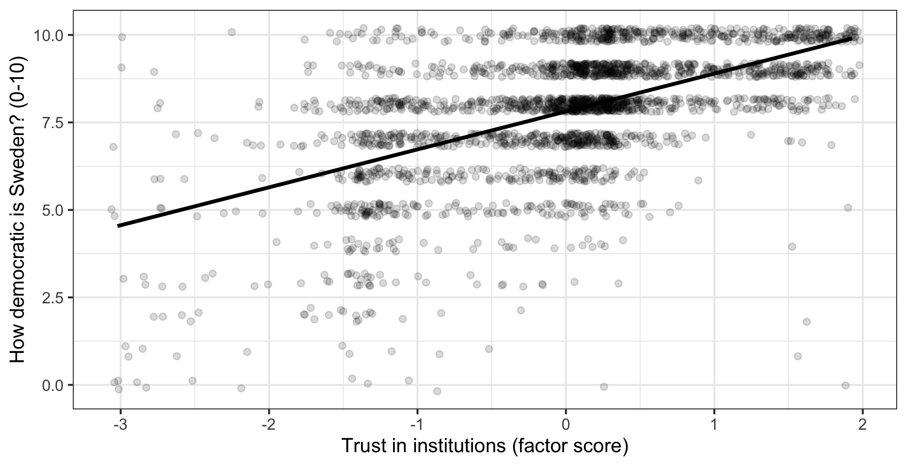
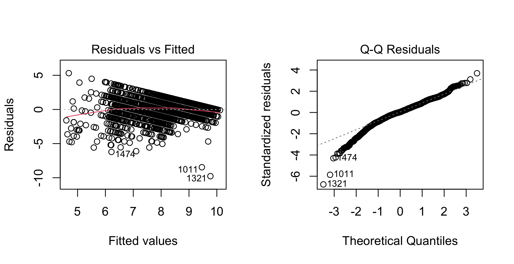

library(ggplot2)
library(dplyr)
library(psych)
swe <- readRDS("data/swe.rds")11 Regression: the basic model
Regression is the workhorse. Everything in the remaining sessions is a variation on it, and most quantitative social science is one form of it or another.
The idea is straightforward: describe an outcome as a straight-line function of one or more other variables. What makes it worth five sessions is everything that follows from that.
We use the trust score built last week, so recreate it here.
trust_items <- c(
"tr_parl", "tr_govt", "tr_court",
"tr_sci", "tr_party", "tr_media"
)
trust_model <- fa(swe[, trust_items], nfactors = 1, fm = "ml")
swe$trust <- trust_model$scores[, 1]11.1 A line through the data
The question: do people who trust institutions more also think their country is more democratic?
ggplot(swe, aes(x = trust, y = demlevel)) +
geom_jitter(width = 0.05, height = 0.2, alpha = 0.15) +
geom_smooth(method = "lm", se = FALSE, colour = "black") +
labs(
x = "Trust in institutions (factor score)",
y = "How democratic is Sweden? (0-10)"
) +
theme_bw()
geom_jitter() is geom_point() with a small random displacement added, so that respondents sharing the same whole-number rating do not sit exactly on top of each other; width and height say how far to move them, and both are small enough here not to distort the picture. geom_smooth(method = "lm") adds a straight line fitted to the data — lm for linear model. se = FALSE turns off the shaded band around it, which we come back to in session 12.
The line has to be some line. Regression picks the one that minimises the total squared vertical distance between the points and the line, which is why it is called ordinary least squares, or OLS.
Why squared? For the same reason variance squares deviations in session 6. Plain distances above and below the line would cancel. Squaring makes them all count, and it also means a point twice as far from the line counts four times as much — which is why outliers matter so much.
11.2 Fitting it
model1 <- lm(demlevel ~ trust, data = swe)
summary(model1)##
## Call:
## lm(formula = demlevel ~ trust, data = swe)
##
## Residuals:
## Min 1Q Median 3Q Max
## -9.9027 -0.7704 0.1027 0.9750 5.4617
##
## Coefficients:
## Estimate Std. Error t value Pr(>|t|)
## (Intercept) 7.81224 0.03034 257.45 <2e-16 ***
## trust 1.08348 0.03285 32.98 <2e-16 ***
## ---
## Signif. codes: 0 '***' 0.001 '**' 0.01 '*' 0.05 '.' 0.1 ' ' 1
##
## Residual standard error: 1.525 on 2523 degrees of freedom
## (320 observations deleted due to missingness)
## Multiple R-squared: 0.3013, Adjusted R-squared: 0.301
## F-statistic: 1088 on 1 and 2523 DF, p-value: < 2.2e-16lm() takes the formula notation from session 8: outcome on the left of ~, predictor on the right. Read it as “demlevel explained by trust”.
Work through that output, because everything from here on prints in this shape.
11.2.1 The coefficients
The Estimate column holds the equation of the line.
(Intercept) = 7.81. The predicted value of the outcome when every predictor is zero. Trust is a factor score with a mean of about zero, so this is roughly the predicted rating for a person with average trust.
Whether an intercept means anything depends entirely on whether zero is a real value of the predictor. Here it is. For a predictor like age it would be the predicted rating for a newborn, which is not useful.
trust = 1.08. The slope. A one-unit increase in the predictor is associated with a change of this much in the outcome. Trust is standardised, so one unit is one standard deviation: someone one standard deviation above average on trust rates Sweden about 1.08 points higher on the 0-to-10 scale.
The units of the slope are always outcome units per predictor unit. This is why variables measured on arbitrary scales produce coefficients that are hard to talk about, and why it pays to know what a one-unit change actually is.
Std. Error is the standard error of the coefficient — exactly the idea from session 6, applied to a slope. Draw another sample and you would get a different slope; this is how much it would vary.
t value is the estimate divided by its standard error. Signal over noise, again.
Pr(>|t|) is the p-value, testing the null hypothesis that the slope in the population is zero — that is, no relationship.
11.2.2 How well the model does
At the bottom:
Residual standard error is roughly the typical size of the model’s mistakes, in outcome units. Here about 1.52 points on a 0-to-10 scale.
Multiple R-squared is the share of the variance in the outcome the model accounts for. Here 0.301, so about 30.1%.
With one predictor, R-squared is exactly the correlation squared:
cor(swe$trust, swe$demlevel, use = "complete.obs")^2## [1] 0.3012942Adjusted R-squared corrects for the fact that adding any variable, even a useless one, raises R-squared a little by chance. The adjustment penalises extra predictors. Use it when comparing models with different numbers of variables.
F-statistic tests whether the model as a whole explains anything at all. With a decent predictor it is always significant, and it is rarely the interesting part.
11.3 Predictions and residuals
The model is a machine for producing predicted values.
swe$predicted <- predict(model1, newdata = swe)
swe$residual <- swe$demlevel - swe$predicted
swe |>
select(trust, demlevel, predicted, residual) |>
filter(!is.na(residual)) |>
head(n = 5) |>
round(2)## # A tibble: 5 × 4
## trust demlevel predicted residual
## <dbl> <dbl> <dbl> <dbl>
## 1 -1.18 8 6.54 1.46
## 2 0.89 10 8.77 1.23
## 3 0.83 10 8.71 1.29
## 4 1.52 9 9.45 -0.45
## 5 0.17 7 8 -1predict() applies the fitted equation, and newdata says which cases to apply it to. The residual is what the model got wrong for that person: observed minus predicted.
Residuals are not leftovers to be ignored. They are where you find out whether the model is any good, which is the next section.
A question. The largest residuals in this model belong to people who rate Sweden’s democracy far lower than their trust score predicts.
Is a large residual a problem with the case, or a problem with the model? What would make you say each?
11.4 Adding a second variable
Here is where regression earns its place.
In session 7 we found that vote choice and education are related. Suppose we ask whether people who voted for the winning right-wing bloc in 2022 rate Swedish democracy differently from those who voted for the left.
model2 <- lm(demlevel ~ bloc, data = swe)
round(coef(summary(model2)), 3)## Estimate Std. Error t value Pr(>|t|)
## (Intercept) 8.157 0.049 165.505 0
## blocRight -0.492 0.073 -6.712 0bloc is a factor with two levels. R turns it into blocRight, which is 1 for right-bloc voters and 0 for left-bloc voters — the level that does not appear becomes the reference category, and the coefficient is the difference from it. Session 13 is entirely about this.
So right-bloc voters rate Swedish democracy 0.49 points lower, and it is clearly significant.
That is worth pausing on, because it is the opposite of what the literature predicts. The standard finding is a winner-loser gap: people who voted for the winning side are more satisfied with how democracy works. The right bloc won in 2022, and here they are more negative.
Now add trust to the model.
model3 <- lm(demlevel ~ bloc + trust, data = swe)
round(coef(summary(model3)), 3)## Estimate Std. Error t value Pr(>|t|)
## (Intercept) 7.909 0.043 181.842 0.000
## blocRight -0.118 0.064 -1.839 0.066
## trust 1.058 0.036 29.430 0.000The bloc coefficient has collapsed from -0.492 to -0.118, and its p-value has gone from below 0.001 to 0.066 — no longer significant at the conventional threshold.
Why? Because the two groups differ in trust:
swe |>
filter(!is.na(bloc)) |>
group_by(bloc) |>
summarise(mean_trust = round(mean(trust, na.rm = TRUE), 3))## # A tibble: 2 × 2
## bloc mean_trust
## <fct> <dbl>
## 1 Left 0.256
## 2 Right -0.112Left-bloc voters are more trusting of institutions. The apparent bloc difference in model2 was largely trust wearing a bloc costume.
11.4.1 What “controlling for” means
This is the whole point of multiple regression, and it is worth stating carefully.
A coefficient in a multiple regression is the association between that predictor and the outcome holding the other predictors constant — the answer to “among people with the same level of trust, does bloc still make a difference?”
Here the answer is: hardly. Once you compare left and right voters at the same level of trust, the gap nearly disappears.
What this does not tell you. The arithmetic is agnostic about which variable is doing what. Exactly the same output is compatible with trust causes both bloc and rating and with bloc causes trust, which causes rating — and in the second case, controlling for trust would be a mistake, because you would be removing part of the effect you were trying to measure.
Regression cannot tell those apart. Only an argument about how the world works can, and that argument has to be made before the model is fitted, not after.
A fuller model:
model4 <- lm(demlevel ~ trust + bloc + age + educ, data = swe)
summary(model4)##
## Call:
## lm(formula = demlevel ~ trust + bloc + age + educ, data = swe)
##
## Residuals:
## Min 1Q Median 3Q Max
## -9.7697 -0.7405 0.0670 0.8940 5.3154
##
## Coefficients:
## Estimate Std. Error t value Pr(>|t|)
## (Intercept) 7.533540 0.161807 46.559 < 2e-16 ***
## trust 1.038182 0.037103 27.981 < 2e-16 ***
## blocRight -0.127618 0.064926 -1.966 0.04948 *
## age 0.001979 0.001864 1.062 0.28850
## educ 0.049193 0.016693 2.947 0.00324 **
## ---
## Signif. codes: 0 '***' 0.001 '**' 0.01 '*' 0.05 '.' 0.1 ' ' 1
##
## Residual standard error: 1.446 on 2092 degrees of freedom
## (748 observations deleted due to missingness)
## Multiple R-squared: 0.3101, Adjusted R-squared: 0.3087
## F-statistic: 235 on 4 and 2092 DF, p-value: < 2.2e-16Each coefficient is now the association with that variable holding all the others constant. Trust does nearly all the work; education adds a little; age contributes nothing detectable.
Note the line (748 observations deleted due to missingness). Every variable added drops everyone missing on it, exactly as warned in session 3. This model rests on 2097 respondents, not 2845.
11.5 Checking the model
plot() on a fitted model gives four diagnostic plots. Two of them matter most.
par(mfrow = c(1, 2))
plot(model4, which = 1)
plot(model4, which = 2)
par(mfrow = c(1, 2)) puts two base-R plots side by side, in one row and two columns. which picks which diagnostic to draw.
Residuals vs Fitted checks two things at once. The residuals should form a shapeless band around zero. A curve means the relationship is not straight — session 14. A funnel, widening or narrowing, means the errors are larger at some predicted values than others.
Ours shows a diagonal edge along the bottom right. That is not a modelling failure but a floor effect: the outcome cannot go below 0, so for high predicted values the residual cannot be very negative. This is session 5 reappearing — the limits of the scale constrain what the model can do.
Q-Q plot checks whether the residuals are normally distributed. Points on the diagonal means yes. Ours bends away at the bottom left, the same floor effect seen from another angle.
The other assumptions are not things a plot will tell you:
- The right variables are in the model. No diagnostic detects a missing variable. This is the assumption most often violated and the only defence is knowing the literature.
- Independent observations. One row per person, and people not grouped in a way that matters. Data on countries, or repeated measurements of the same people, breaks this.
- Predictors not too strongly related to each other. Mild correlation is fine and normal. Two near-identical predictors will produce unstable coefficients with large standard errors.
- No single case dominating.
plot(model4, which = 5)shows influence.
OLS is fairly robust. Mild violations of normality and constant variance usually do not change the conclusions, especially with thousands of cases. Non-linearity and a missing variable are the two that will actually mislead you.
A question. model4 explains 31.0% of the variance in how democratic people think Sweden is.
Is that a good model? What would you need to know to answer, and is there a number of R-squared that would settle it by itself?
How to write it up.
Trust in institutions was strongly associated with evaluations of Swedish democracy (b = 1.04, SE = 0.04, p < .001): a one standard deviation increase in trust corresponded to a 1.04-point higher rating on the 0-10 scale. Voting for the right-wing bloc was associated with a 0.13-point lower rating (p = 0.049) once trust was accounted for. The model explained 31.0% of the variance (n = 2097).
Give the coefficient, its standard error, the p-value, and — most importantly — what a one-unit change means in the units of the data. Mistakes to avoid:
- Reporting coefficients without saying what one unit is. “b = 1.04” is meaningless until the reader knows the scale.
- Reporting only stars. Give the estimate and its uncertainty.
- Causal verbs. “Increases”, “leads to”, “drives” all claim more than a regression can support. Use “is associated with”.
- Interpreting the intercept when zero is not a real value of the predictors.
- Forgetting the n, particularly after listwise deletion has removed a quarter of the sample.
- Treating a high R-squared as a good model or a low one as a bad model. It measures spread around the line, not whether the model is right.
- Adding controls without an argument for why. Every control is a claim about how the world works, and a control on the wrong variable removes part of the effect you want.
In the seminar. swirl lesson 11 Regression Basics. Fitting a model, reading the output, predicted values and residuals, adding a second predictor, and what changes when you do. Around 30 minutes.